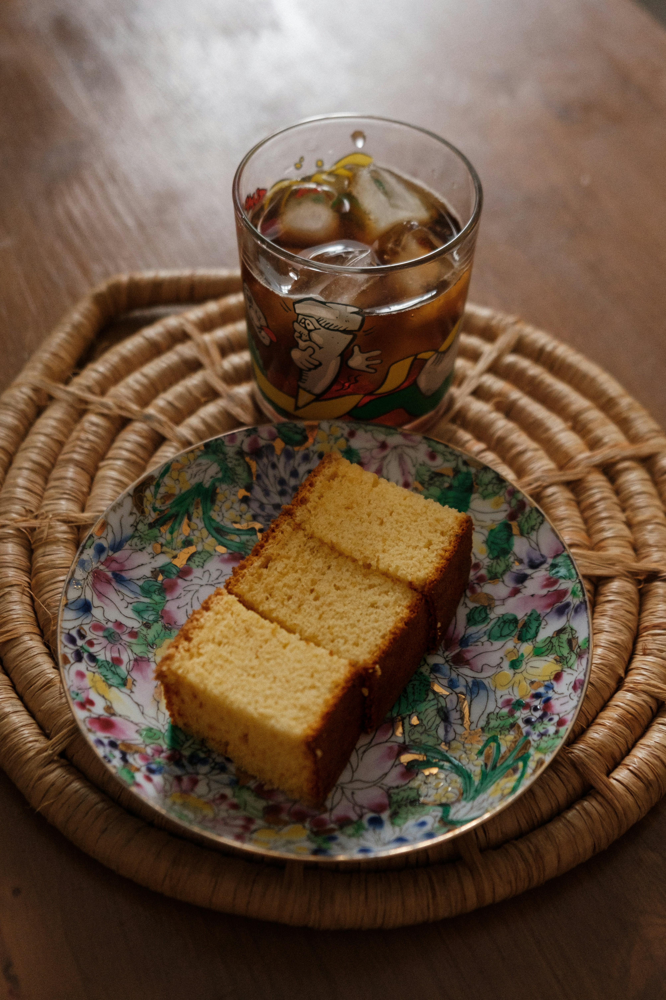

Bolo de milho
O melhor Bolo de milho

Ingredientes (13 porções)
- 2 xícaras de farinha de trigo
- 1 xícara de leite
- 1 colher (sopa) de fermento em pó
- Cobertura
- 2 xícaras de leite
- 2 xícaras de açúcar
- 6 colheres (sopa) de chocolate em pó
- 6 ovos
- 2 colheres (sopa) de manteiga
- 1 xícara de chocolate em pó
utensilios
- Batedeira
- Bowl
- Espatula para bolo
- Forma
Modo de preparo
Modo de preparo :
40 min
- Massa:
Em uma batedeira, bata as claras em neve.
- Acrescente as gemas, o açúcar e bata novamente.
- Adicione a farinha, o chocolate em pó, o fermento, o leite e bata por mais alguns minutos.
- Despeje a massa em uma forma untada e leve para assar em forno médio (180° C), preaquecido, por 40 minutos.
- Cobertura:
Em uma panela, leve a fogo médio o chocolate em pó, a manteiga e o leite, deixe até ferver.
- Despeje quente sobre o bolo já assado.
Descubra mais receitas